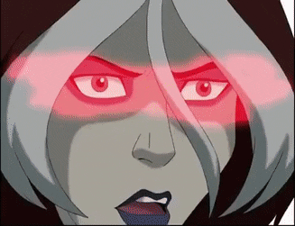

Vampira
Devido às maquinações de Mystique, Vampira inicialmente desconfiou dos X-Men e se juntou à Irmandade dos Mutantes , mas depois de descobrir que Mystique a enganou atacando-a se passando por membros dos X-Men, ela mudou de lealdade. A princípio irritada com o comportamento brincalhão de Nightcrawler, ela se aproxima dele depois de saber que é sua irmã adotiva, e ambos renunciam a Mystique por abusar deles. A série não estabeleceu nenhum nome de nascimento para Rogue e não deu nenhuma pista sobre isso após seu episódio introdutório. A habilidade mutante de Vampira permite que ela use os aspectos de outra pessoa (memórias, hábitos, padrões de fala, poderes (se mutantes) através do contato pele a pele nua. É incontrolável e possivelmente mortal.

Personalidade
Rogue é uma adolescente incerta e insegura, não a bomba voluptuosa que ela era nos quadrinhos . Ela se isola de outras pessoas por causa de sua habilidade mutante, que a impede de fazer qualquer contato físico (pele a pele) com as pessoas.
O isolamento de Vampira a leva a ser petulante, sarcástica e alarmantemente defensiva. Como resultado de seu isolamento, Rogue tem dificuldade em confiar nas pessoas. Desde que se juntou aos X-Men, Rogue se tornou mais próxima de sua colega de quarto, Kitty, e mantém uma paixão pelo líder de campo dos X-Men, Scott.
Ela recentemente mostrou interesse no capanga de Magneto , Gambit , já que ambos perceberam que tinham muito em comum (incluindo pais adotivos que preferem nutrir seus poderes ao invés deles), e agora são amigos, se nada mais.
No entanto, Rogue também é muito inteligente. Ela teve duas aulas separadas com Scott Summers, que é um ano mais velho que ela, o que significa que ela avançou um ano em pelo menos duas de suas aulas, possivelmente mais. Ela também parece ler bastante, pois reconheceu uma citação de Besta do Hamlet de Shakespeare .

Vampira tem cabelo curto ruivo com mechas brancas como franja na frente de seu cabelo. Ela tem olhos acinzentados e pele clara, e usa maquiagem e batom arroxeado-preto. A roupa mais vista da Rogue consiste em uma blusa verde de mangas compridas transparente sobre um top preto, uma saia de couro preta curta e leggings pretas. Ela usa botas de combate grossas e coleiras de cachorro em volta do pescoço e pulsos. Luvas pretas cobrem suas mãos e saem facilmente quando Vampira precisa. Portanto, no geral, ela parece ser bem gótica. Ocasionalmente, ela usou por cima dele um longo casaco marrom escuro.
Em sua segunda roupa, Vampira mostra mais pele ao usar um top escuro e roxo, luvas roxas compridas que vão até os ombros e uma saia na altura do joelho coberta com uma corrente branca que fica pendurada na cintura. São usadas botas de cano alto, e um lenço roxo claro protege as áreas do pescoço e do peito.
Home